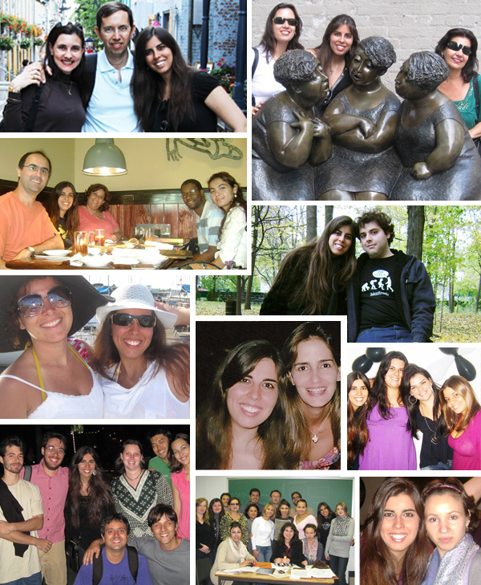

June 28, 2010
Olá!

Este ano a F1 voltou para o Canadá, melhor, para Montréal.
E nada poderia ser melhor do que ter meu pai aqui para
assistirmos este grande evento! Meu pai é fã da F1 e
assiste as corridas todos os domingos religiosamente
(inclusive acorda de madrugada se for necessário).
Confesso que não sou grande fã, mas segui a risca o
figurino. Fui de vermelho para prestigiar a Ferrari e
Felipe Massa. E me esforcei para aprender o nome de alguns
pilotos (vergonha). Acontece que logo na largada, Felipe Massa se embolou
e só conseguimos ver ele bem depois. Resultado: 15 lugar.
Quem levou o 1 lugar foi Lewis Hamilton, que nem é
brasileiro e nem é Ferrari. rs
Para saber mais sobre o circuito e sobre a corrida, segue
o link:
http://en.wikipedia.org/wiki/2010_Canadian_Grand_Prix. Tenho certeza absoluta que este link será muito melhor
do que qualquer explicação que eu possa dar sobre a
corrida.
Impressões:
read more »
June 28, 2010
Olá!
Hoje, novamente, não escrevo nada específico. Na verdade,
estou com 300 coisas para contar, mas deixo para os
próximos posts.
Engraçado como nos acostumamos rápido (ou não) com lugares e pessoas. Eu costumo falar com quase todas
as pessoas mais queridas diariamente. Mas quando alguma
delas vem nos visitar não é nada fácil dizer “até
mais”.
Quando nos despedimos a primeira vez no aeroporto, digo,
quando eu vim de vez para o Canadá, foi um pouco mais
fácil porque afinal de contas, ainda não sentia falta de
ninguém e estava tão entusiasmada com as novidades e
desafios que a saudade ficou um pouco de lado (só um
pouco).
Mas depois da experiência de ter visitas queridissimas ao
nosso redor ou de visitarmos novamente o Brasil, parece
que ficam cada vez mais tristes as despedidas. Talvez por
percebermos que ficou mais longe a possibilidade de uma
nova visita e vamos esperar um bom tempo para nos vermos
novamente.
Eu não posso reclamar, em menos de 1 ano, recebi visitas e
visitei as pessoas que mais amo, diferente dos meus amigos
aqui. E posso afirmar mais uma vez que:
a saudade é uma dor suave e constante. Mas a despedida
é uma dor quase insuportável. Depois que nos apegamos e a casa fica cheia de barulho
e vida, não é nada fácil lidar com o vazio novamente e
termos que nos readaptar.
Mas de fato, damos mais valor e percebemos de forma mais
intensa, o quanto cada pessoa é importante e faz toda a
diferença. Cada momento, por ser raro, nos dá a sensação
do quão inesquecível e maravilhoso ele é!
Este post é dedicado para cada um de vocês, longe ou
perto – mas sempre do lado de dentro – que faz
com que o meu dia seja mais feliz :)

June 12, 2010
Olá!

Hoje está fazendo um ano que cheguei no Canadá em
definitivo. Em Montréal cheguei no dia 16. Isso porque
fiquei alguns dias em Toronto =)
Tudo bem que apesar de 1 ano de Canadá, eu literalmente
fugi do inverno. Neste momento mais desafiante, eu estava
no Brasil rs
O que posso dizer? Eu estou adorando! Claro que eu sinto
saudade dos meus amigos, dos meus pais e da minha irmã.
Mas a sensação de sair na rua andando, é maravilhosa! Sem
ninguém pedindo dinheiro ou com medo de roubo. Essa
liberdade, não tem preço. E apesar de não ser a mesma
coisa, eu falo sempre pela net com meus amigos mais
próximos. Aliás, eu trabalho pela internet e confesso que
a minha vida sem ela, seria bem complicada.
Sim, porque até as receitas que eu ando fazendo por aqui,
são da internet. rs
read more »